B
B
Appunti di Analisi Matematica I
Ettore Forigo
ℕ = Numeri Naturali = 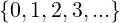
ℤ = Numeri Interi
ℚ = Numeri Razionali
ℕ ⊂ ℤ ⊂ ℚ
Su ℚ è definita una relazione d’ordine totale (≤)
Gli insiemi con relazioni d’ordine totale si chiamano totalmente ordinati.
I 3 termini seguenti, in ordine di importanza crescente, sono abbastanza sinonimi; cambia solo l’importanza nell’ambito dell’esposizione di una teoria formale:
Congettura dimostrata.
Dimostrato a partire da un teorema.
A B
Dove A è detta ipotesi e B è detta tesi.
P  Q
Q
Dove P è detto antecedente e Q è detto conseguente.
Si assume l’antecedente (o premessa) e si dimostra il conseguente.
Si suppone l’ipotesi e per assurdo si suppone il contrario della tesi, e si trova una contraddizione.
P(n0) ∧ (P(n)  P(n + 1))
P(n + 1))  ∀n ∈ ℕ.P(n)
∀n ∈ ℕ.P(n)
Il caso base nell’induzione può essere anche un numero ≠0.
(ℚ,≤) formano un Campo Ordinato.
Un campo totalmente ordinato (𝕂,≤) si dice completo se vale il seguente
assioma di completezza (Assioma di Dedekin):
∀A,B,A ⊆ 𝕂,B ⊆ K,A≠∅,B≠∅
∀x ∈ A,∀y ∈ B.x ≤ y  ∃c ∈ 𝕂 : ∀x ∈ A,∀y ∈ B.x ≤ c ≤ y
∃c ∈ 𝕂 : ∀x ∈ A,∀y ∈ B.x ≤ c ≤ y
c è chiamato elemento separatore tra gli insiemi A e B.
Il campo (ℚ,≤) è totalmente ordinato ma non completo.
ℝ è una estensione di ℚ tale che il campo (ℝ,≤) è totalmente ordinato e completo.
Ogni numero reale può essere univocamente associato ad un punto della retta reale e viceversa
ℝ ∖ ℚ = Numeri Irrazionali
𝔼 ⊆ ℝ, 𝔼≠∅
∃a ∈ 𝔼 : ∀x ∈ 𝔼.a ≤ x  a è un minimo di 𝔼
a è un minimo di 𝔼
∃b ∈ 𝔼 : ∀x ∈ 𝔼.x ≤ b  b è un massimo di 𝔼
b è un massimo di 𝔼
min(𝔼) = a
max(𝔼) = b
Esistono insiemi limitati che non ammettono né massimo né minimo.
𝔼 = 
Se 𝔼 ⊆ ℝ ammette minimo o massimo, allora è unico.
a ∈ 𝔼, a′∈ 𝔼
∀x ∈ 𝔼.a ≤ x ∧ a′≤ x per assurdo.
Ponendo x = a ottengo a′≤ a
Ponendo x = a′ ottengo a ≤ a′
Siccome devono valere entrambe, a = a′. Q.E.D.
𝔼 ⊆ ℝ, 𝔼≠∅
a ∈ ℝ è un maggiorante di 𝔼 se ∀x ∈ 𝔼.a ≤ x
b ∈ ℝ è un maggiorante di 𝔼 se ∀x ∈ 𝔼.x ≤ b
Non sono unici!
M(𝔼) = Insieme dei maggioranti di 𝔼
m(𝔼) = Insieme dei minoranti di 𝔼
E ⊆ ℝ, 𝔼≠∅
M(𝔼)≠∅  𝔼 è superiormente limitato
𝔼 è superiormente limitato
m(𝔼)≠∅  𝔼 è inferiormente limitato
𝔼 è inferiormente limitato
M(𝔼)≠∅ ∧ m(𝔼)≠∅  𝔼 è limitato
𝔼 è limitato
𝔼 ⊆ ℝ, 𝔼≠∅
𝔼 è superiormente limitato  M(𝔼) ammette minimo (estremo superiore di 𝔼)
M(𝔼) ammette minimo (estremo superiore di 𝔼)
𝔼 è inferiormente limitato  m(𝔼) ammette massimo (estremo inferiore di
𝔼)
m(𝔼) ammette massimo (estremo inferiore di
𝔼)
𝔼≠∅, M(𝔼)≠∅
∀x ∈ 𝔼,y ∈ M(𝔼).x ≤ y
Quindi per l’assioma di completezza:
∃c ∈ ℝ : ∀x ∈ 𝔼,y ∈ M(𝔼).x ≤ c ≤ y
∀x ∈ 𝔼.x ≤ c  c ∈ M(𝔼)
c ∈ M(𝔼)
∀y ∈ M(𝔼).c ≤ y  x = minM(𝔼)
x = minM(𝔼)
𝔼 è superiormente limitato  sup(𝔼) = sup 𝔼 = min(M(𝔼))
sup(𝔼) = sup 𝔼 = min(M(𝔼))
𝔼 è inferiormente limitato  inf(𝔼) = inf 𝔼 = max(m(𝔼))
inf(𝔼) = inf 𝔼 = max(m(𝔼))
sup 𝔼 ∈ 𝔼  sup 𝔼 = max 𝔼
sup 𝔼 = max 𝔼
inf 𝔼 ∈ 𝔼  inf 𝔼 = min 𝔼
inf 𝔼 = min 𝔼
sup 𝔼 e inf 𝔼 sono unici.
𝔼 ⊆ ℝ, 𝔼≠∅, 𝔼 superiormente limitato
N.d.r.
Tutti gli 𝜀 nelle definizioni e dimostrazioni sono da considerarsi ∈ ℝ salvo
diversamente specificato.
ι = sup 𝔼 ⇐⇒∀x ∈ 𝔼 : x ≤ ι ∧∀𝜀 > 0 ∃x ∈ 𝔼 : x > ι − 𝜀
ι = inf 𝔼 ⇐⇒∀x ∈ 𝔼 : ι ≤ x ∧∀𝜀 > 0 ∃x ∈ 𝔼 : x < ι + 𝜀
Insieme dei numeri reali estesi:
ℝ = ℝ ∪
∀x ∈ ℝ : −∞≤ x ≤ +∞
∀x ∈ ℝ : −∞ < x < +∞
∀x ∈ ℝ : x + ∞ = +∞
∀x ∈ ℝ : x + (−∞) = −∞
∀x > 0,x ∈ ℝ
x ⋅ (+∞) = +∞
x ⋅ (−∞) = −∞
∀x < 0, x ∈ ℝ
x ⋅ (+∞) = −∞
x ⋅ (−∞) = +∞
N.B.
Non sono definite le operazioni:
0 ⋅ (±∞), +∞−∞
I ⊆ ℝ : ∀x,y ∈ I : x < z < y  z ∈ I
z ∈ I
I è un detto intervallo.
a,b ∈ ℝ ,a < b
(a,b) =]a,b[= 
[a,b) = 
(a,b] = 
[a,b] = 
𝔼 ⊆ ℝ, 𝔼≠∅, M(𝔼) = ∅
sup 𝔼 = +∞
𝔼 ⊆ ℝ, 𝔼≠∅, m(𝔼) = ∅
inf 𝔼 = −∞
Una funzione è definita da una terna (f,A,B) dove:
A ⊆ ℝ , B ⊆ ℝ , A≠∅, B≠∅
f è una legge che ad ogni elemento x ∈ A associa univocamente un elemento
f(x) ∈ B.
Notazione:
A = dom(f) (dominio di f)
B = codom(f) (codominio di f)
Si scrive: f : A → B
N.B.
Il codominio B non è determinato univocamente da f.
Se B è codominio di f e B ⊆ C allora anche C è codominio di f.
Due funzioni f1 : A1 → ℝ e f2 : A2 → ℝ
sono uguali ⇐⇒ A1 = A2 ∧∀x ∈ A1 = A2 : f1(x) = f2(x)
f : A → B
im(f) = f[A] = Imf = 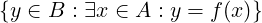
im(f) ⊆ codom(f)
Una funzione da A a B si dice iniettiva se:
∀x,x′∈ A.f(x) = f(x′)  x = x′
x = x′
im(f) = codom(f)
∀y0 ∈ codom(f) la retta y = y0 interseca il grafico di f in almeno un punto.
Equivalentemente:
∀y ∈ codom(f)
f−1(y)≠∅
Se f : A → B non è suriettiva si può rendere suriettiva restringendo il suo
codominio alla sua immagine (Troncatura).
Si può restringere anche il dominio per rendere la funzione iniettiva (Restrizione).
Una funzione si dice biiettiva (o biiezione, o anche corrispondenza 1 a 1 o biunivoca) se è sia iniettiva che suriettiva.
∀y ∈ B ∃!x ∈ A : y = f(x)  f : A → B è invertibile.
f : A → B è invertibile.
f : A → B è invertibile  f−1 : im(f) → dom(f) è la funzione inversa di f.
f−1 : im(f) → dom(f) è la funzione inversa di f.
∀y ∈ (B = im(f)) : y = f(x) ⇐⇒ x = f−1(y)
Osservazione:
∀y ∈ im(f) : y = f(f−1(y))
f è invertibile ⇐⇒ f è biiettiva
Il grafico della funzione inversa:
graf(f−1)
= 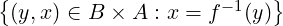
= 
= 
(y,x) ∈ graf(f−1) ⇐⇒ (x,y) ∈ graf(f)
graf(f−1) è simmetrico di graf(f) rispetto alla retta y = x
f : A → B, E ⊆ A
f|E : E → B
f|E(x) = f(x) ∀x ∈ E
f|E è chiamata restrizione di f ad E.
Una funzione non iniettiva si può rendere iniettiva considerandone opportune restrizioni.
Se f è invertibile, allora:
∀x ∈ dom(f).(f−1 ∘ f)(x) = x
∀x ∈ im(f).(f ∘ f−1)(x) = x
(g ∘ f)−1 = f−1 ∘ g−1
Il valore del limite di una funzione può andare oltre il dominio della funzione, ma bisogna definire delle condizioni.
Dato x0 ∈ ℝ e dato r > 0
Ir(x0) = (x0 − r,x0 + r)
È chiamato l’intorno di centro x0 e raggio r.
Nota:
x0 è detto “x con zero”
Sia x0 ∈ e sia a ∈ ℝ, si chiama:
e sia a ∈ ℝ, si chiama:
(a,+∞) intorno di infinito di estremo inferiore a
(−∞,a) intorno di meno infinito di estremo superiore a
A ⊆ ℝ, x0 ∈ ℝ
∃𝜀 > 0 : I𝜀(x0) ⊆ A  x0 è punto interno di A
x0 è punto interno di A
A ⊆ ℝ, x0 ∈ ℝ
∀𝜀 > 0.I𝜀(x0) ∩ (A ∖ )≠0
)≠0  x0 è punto di accumulazione di A
x0 è punto di accumulazione di A
Notazione:
p.a. di A = punto di accumulazione di A
Osservazioni:
La definizione di punto di accumulazione non richiede che x0 ∈ A
Ogni punto interno è anche un punto di accumulazione.
A ⊆ ℝ, x0 ∈ ℝ
∃𝜀 > 0 : I𝜀(x0) ∩ A = 
 x0 è un punto isolato di A
x0 è un punto isolato di A
x0 è un punto di accumulazione di A ∨ x0 è un punto isolato di A  x0 è un
punto aderente ad A
x0 è un
punto aderente ad A
A ⊆ ℝ
Å = 
A ⊆ ℝ
A = 
N.B.
Å ⊆ A ⊆ A
A ⊆ ℝ
∂A = A ∖Å = 
A ⊆ ℝ
A = Å  A è aperto (contiene solo punti interni)
A è aperto (contiene solo punti interni)
A = A  A è chiuso
A è chiuso
A ⊆ ℝ, x0 ∈ ℝ punto di accumulazione di A, f : A → ℝ
f converge a L ∈ ℝ per x che tende ad x0 scritto:
limx→x0f(x) = L
se:
∀𝜀 > 0.∃δ > 0 : ∀x ∈ Iδ(x0) ∩ (A ∖ .
. < 𝜀
< 𝜀
N.d.r.
Tutti i δ nelle definizioni e dimostrazioni sono da considerarsi ∈ ℝ salvo
diversamente specificato.
Osservazioni:
La definizione non richiede che x0 ∈ A
Anche se x0 ∈ dom(f) = A il valore della funzione in questo punto non ha
nessuna influenza sul valore del limite.
x0 deve essere un p.a. di A perché x deve potersi avvicinare a x0 indefinitamente
rimanendo in A = dom(f).
Estensione della definizione di:
limx→x0f(x) = L
nei casi in cui x0 ∈ e/o L ∈
e/o L ∈
N.d.r.
Tutte le definizioni possono essere riscritte equivalentemente sostituendo
l’intorno di ± infinito I±∞(a) dove compaiono gli intervalli (a,+∞) e
(−∞,a).

f : A → ℝ, x0 p.a. di A
Si scrive limx→x0 = +∞ se:
∀M ∈ ℝ.∃δ > 0 : ∀x ∈ Iδ(x0) ∩ (A ∖ ).f(x) > M
).f(x) > M
f diverge positivamente per x → x0
Si scrive limx→x0 = −∞ se:
∀M ∈ ℝ.∃δ > 0 : ∀x ∈ Iδ(x0) ∩ (A ∖ ).f(x) < M
).f(x) < M
f diverge negativamente per x → x0
Si scrive limx→x0 = L se:
∀𝜀 > 0.∃a > R : ∀x ∈ (a,+∞). < 𝜀
< 𝜀
Si scrive limx→x0 = L se:
∀𝜀 > 0.∃a < R : ∀x ∈ (−∞,a). < 𝜀
< 𝜀
 < 𝜀 ⇐⇒ f(x) ∈ (L − 𝜀,L + 𝜀) = I𝜀(L)
< 𝜀 ⇐⇒ f(x) ∈ (L − 𝜀,L + 𝜀) = I𝜀(L)
 , L ∈
, L ∈
Si scrive limx→x0f(x) = +∞ se:
∀M ∈ ℝ.∃a > R : ∀x ∈ (a,+∞).f(x) > M
Si scrive limx→x0f(x) = −∞ se:
∀M ∈ ℝ.∃a > R : ∀x ∈ (a,+∞).f(x) < M
Si scrive limx→x0f(x) = +∞ se:
∀M ∈ ℝ.∃a < R : ∀x ∈ (−∞,a).f(x) > M
Si scrive limx→x0f(x) = −∞ se:
∀M ∈ ℝ.∃a < R : ∀x ∈ (−∞,a).f(x) < M
∀a,b ∈ ℝ.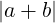≤ +
+ 
∀x ∈ ℝ.x ≤ ∧−x ≤
∧−x ≤
f : A → ℝ, x0 ∈ ℝ p.a. di A
Supponendo che esistano due limiti L ∈ ℝ e L′∈ ℝ tali che limx→x0f(x) = L e
contemporaneamente limx→x0f(x) = L′.
Allora L = L′
Sia 𝜀 > 0 arbitrario.
Supponendo per assurdo che estano due limiti L ed L′, con L≠L′:
limx→x0f(x) = L  ∃δ1 > 0 : ∀x ∈ Iδ1(x0) ∩ (A ∖
∃δ1 > 0 : ∀x ∈ Iδ1(x0) ∩ (A ∖ ).
). < 𝜀
< 𝜀
limx→x0f(x) = L′ ∃δ2 > 0 : ∀x ∈ Iδ2(x0) ∩ (A ∖
∃δ2 > 0 : ∀x ∈ Iδ2(x0) ∩ (A ∖ ).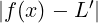 < 𝜀
).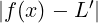 < 𝜀
Imin(a,b)(x0) ⊆ Imax(a,b)(x0)
Equivalentemente:
Ia(x0) ∩ Ib(x0) = Imin(a,b)(x0)
Ponendo δ = min(δ1,δ2), nel risultante intorno:
Iδ(x0) ∩ (A ∖ )
)
valgono entrambe le definizioni dei limiti:
∀x ∈ Iδ(x0) ∩ (A ∖ ).
).
 < 𝜀
< 𝜀
 < 𝜀
< 𝜀
La differenza assoluta è commutativa, quindi la prima si può riscrivere come:
∀x ∈ Iδ(x0) ∩ (A ∖ ).
).
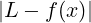 < 𝜀
e applicando la disuguaglianza triangolare si ottiene:
∀x ∈ Iδ(x0) ∩ (A ∖ ).
).
 =
=  ≤
≤ +
+ 
Viste le disuguaglianze:
∀x ∈ Iδ(x0) ∩ (A ∖ ).
).
 < 𝜀
< 𝜀
 < 𝜀
< 𝜀
e dato che:
a ≥ 0, b ≥ 0, c > 0
a < c ∧ b < c  a + b < 2c
a + b < 2c
è sicuramente vero che:
∀x ∈ Iδ(x0) ∩ (A ∖ ).
).
 ≤
≤ +
+  < 2𝜀
< 2𝜀
Dunque ∀𝜀 > 0 si ha:
0 ≤ < 2𝜀
< 2𝜀 
 = 0
= 0
 = 0
= 0  L = L′
L = L′
C.V.D.
f,g : A → ℝ, x0 ∈ ℝ , L,M ∈ ℝ tali che x0 è un p.a. di A e:
limx→x0f(x) = L
limx→x0g(x) = M
Allora le seguenti identità:
limx→x0(f(x) + g(x)) = L + M
limx→x0(f(x)g(x)) = L ⋅ M
limx→x0( ) =
) = 
valgono in assenza di forme indeterminate (∞−∞,0 ⋅ (±∞), )
)
 ) =
) = 
Supponendo limx→x0f(x) = L≠0 ∧ limx→x0g(x) = 0
Allora valgono le seguenti regole:
Se ∃δ > 0 : ∀x ∈ Iδ(x0) ∩ (A ∖ ).g(x) > 0 allora:
).g(x) > 0 allora:
limx→x0( ) =
) =
+∞ se L > 0
−∞ se L < 0
Se ∃δ > 0 : ∀x ∈ Iδ(x0) ∩ (A ∖ ).g(x) < 0 allora:
).g(x) < 0 allora:
limx→x0( ) =
) =
−∞ se L > 0
+∞ se L < 0
Se la funzione cambia segno in ogni intorno di x0, ovvero:
∀δ > 0.∃x1,x2 ∈ Iδ(x0) ∩ (A ∖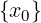) : g(x1)g(x2) < 0 allora:
limx→x0( ) non esiste
) non esiste
A ⊆ ℝ, x0 ∈ ℝ p.a. di A, f : A → ℝ
Suppongo che:
limx→x0f(x) = L≠0
allora ∃δ > 0 : ∀x ∈ Iδ(x0) ∩ (A ∖ ).f(x) ha lo stesso segno di L.
).f(x) ha lo stesso segno di L.
Supponendo che L > 0 si pone nella definizione di limx→x0 = L 𝜀 =  > 0.
> 0.
Quindi ∃δ > 0 : ∀x ∈ Iδ(x0)∩(A∖ ).
). < 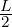 ⇐⇒ f(x) ∈ (
< 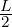 ⇐⇒ f(x) ∈ ( ,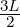)
,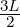)  f(x) > 0
f(x) > 0
Q.E.D.
f,g : A → ℝ, x0 p.a. di A.
Supponendo che:
∀x ∈ A.f(x) ≤ g(x)
Se i limiti:
limx→x0f(x) = L
limx→x0g(x) = M
esistono e sono finiti, allora L ≤ M
Supponendo per assurdo che L > M si considera la funzione f(x) −g(x) in A e si
osserva che:
limx→x0(f(x) − g(x)) = L − M > 0
Quindi per il teorema della permanenza del segno:
∃δ > 0 : ∀x ∈ Iδ(x0) ∩ (A ∖ ).f(x) − g(x) > 0
).f(x) − g(x) > 0
Contraddizione con l’ipotesi! Q.E.D.
Da f(x) < g(x) non segue che:
limx→x0f(x) < limx→x0g(x)
f,g,h : A → ℝ, x0 p.a. di A.
Supponendo che:
∀x ∈ A.h(x) ≤ f(x) ≤ g(x)
limx→x0h(x) = limx→x0g(x) = L  limx→x0f(x) = L
limx→x0f(x) = L
𝜀 arbitrario.
limx→x0h(x) = L  ∃δ1 > 0 : ∀x ∈ Iδ1(x0) ∩ (A ∖
∃δ1 > 0 : ∀x ∈ Iδ1(x0) ∩ (A ∖ ).
). < 𝜀
< 𝜀
limx→x0g(x) = L  ∃δ2 > 0 : ∀x ∈ Iδ2(x0) ∩ (A ∖
∃δ2 > 0 : ∀x ∈ Iδ2(x0) ∩ (A ∖ ).
). < 𝜀
< 𝜀
Ponendo δ = min(δ1,δ2) si ha che:
∀x ∈ Iδ(x0) ∩ (A ∖ )
)
valgono:
f(x) − L ≤ g(x) − L < 𝜀
f(x) − L ≥ h(x) − L ≥− > −𝜀
> −𝜀
Che implicano:
−𝜀 < f(x) − L < 𝜀 ⇐⇒ < 𝜀
< 𝜀
Q.E.D.
f,g : A → ℝ, x0 p.a. di A.
Supponendo che:
limx→x0f(x) = 0
la funzione g è limitata in A, cioè:
∃M ∈ R : ∀x ∈ A. ≤ M
≤ M
Allora:
limx→x0f(x)g(x) = 0
Siccome ∀x ∈ A. ≤ M si ha che:
≤ M si ha che:
∀x ∈ A.0 ≤ ≤ M
≤ M
Applico il teorema dei due carabinieri con h(x) = 0 e g(x) = M .
.
Si ha limx→x0M = M limx→x0
= M limx→x0 = 0
= 0
limx→x0 = 0
= 0
Quindi:
limx→x0 = 0 da cui la tesi.
= 0 da cui la tesi.
Q.E.D
f : A → ℝ, x0 ∈ ℝ p.a. di A ∩ (x0,+∞)
f ammette limite destro in x0, scritto:
limx→x0+f(x) = L ∈ ℝ
se:
∀𝜀 > 0.∃δ > 0 : ∀x ∈ (x0,x0 + δ) ∩ A. < 𝜀
< 𝜀
N.B.
Se A = (a,b) allora b è un p.a. di A, ma non è un p.a. di A ∩ (b,+∞) = ∅
f : A → ℝ, x0 ∈ ℝ p.a. di A ∩ (−∞,x0)
f ammette limite sinistro in x0, scritto:
limx→x0−f(x) = L ∈ ℝ
se:
∀𝜀 > 0.∃δ > 0 : ∀x ∈ (x0 − δ,x0) ∩ A. < 𝜀
< 𝜀

f : A → ℝ, x0 ∈ ℝ p.a. di A ∩ (x0,+∞)
Si scrive:
limx→x0+f(x) = +∞
se:
∀M ∈ ℝ.∃δ > 0 : ∀x ∈ (x0,x0 + δ) ∩ A.f(x) > M
Analogamente, si scrive:
limx→x0+f(x) = −∞
se:
∀m ∈ ℝ.∃δ > 0 : ∀x ∈ (x0,x0 + δ) ∩ A.f(x) < m
f : A → ℝ, x0 ∈ ℝ p.a. di A ∩ (−∞,x0)
Si scrive:
limx→x0−f(x) = +∞
se:
∀M ∈ ℝ.∃δ > 0 : ∀x ∈ (x0 − δ,x0) ∩ A.f(x) > M
Analogamente si scrive:
limx→x0−f(x) = −∞
se:
∀m ∈ ℝ.∃δ > 0 : ∀x ∈ (x0 − δ,x0) ∩ A.f(x) < m
f : A → ℝ, x0 ∈ ℝ p.a. di A ∩ (x0,+∞) e di A ∩ (−∞,x0)
Allora f ammette limite per x → x0 se e solo se:
∃limx→x0+f(x) = L+ ∈ ℝ
∃limx→x0−f(x) = L−∈ ℝ
L+ = L−
In tal caso:
limx→x0f(x) = L+ = L−
N.B.
Il teorema implica che:
limx→x0f(x) non esiste se:
Almeno uno fra:
limx→x0+f(x)
limx→x0−f(x)
non esiste, oppure se:
limx→x0+f(x)≠limx→x0−f(x)
Si dice che f : A → ℝ è:
Crescente in A se:
∀x,y ∈ A.x < y  f(x) ≤ f(y)
f(x) ≤ f(y)
Decrescente in A se:
∀x,y ∈ A.x < y  f(x) ≥ f(y)
f(x) ≥ f(y)
Strettamente Crescente in A se:
∀x,y ∈ A.x < y  f(x) < f(y)
f(x) < f(y)
Strettamente Decrescente in A se:
∀x,y ∈ A.x < y  f(x) > f(y)
f(x) > f(y)
N.B.
f è strettamente monotona  f è iniettiva
f è iniettiva
f è crescente e decrescente  f è costante
f è costante
f : A → ℝ, x0 ∈ ℝ p.a. di A ∩ (x0,+∞) e di A ∩ (−∞,x0)
f è crescente in A  f ammette in x0 entrambi i limiti unilaterali e vale:
f ammette in x0 entrambi i limiti unilaterali e vale:
limx→x0+f(x) = inf 
limx→x0−f(x) = sup
l = inf 
Quindi:
∀x > x0,x ∈ A.l ≤ f(x)
∀𝜀 > 0.∃x𝜀 > x0,x𝜀 ∈ A : f(x𝜀) < l + 𝜀
𝜀 > 0, ponendo δ = x𝜀 − x0 > 0 allora:
∀x ∈ (x0,x0 + δ) ∩ A = (x0,x𝜀) ∩ A.
0 ≤ f(x) − l ≤ f(x𝜀) − l < 𝜀
f è crescente, quindi:
 < 𝜀
< 𝜀
limx→x0+f(x) = l
L = sup
Quindi:
∀x < x0,x ∈ A.f(x) ≤ L
∀𝜀 > 0.∃x𝜀 < x0,x𝜀 ∈ A : f(x𝜀) > L − 𝜀
𝜀 > 0, ponendo δ = x0 − x𝜀 > 0 allora:
∀x ∈ (x0 − δ,x0) ∩ A = (x𝜀,x0) ∩ A.
0 ≤ L − f(x) ≤ L − f(x𝜀) < 𝜀
f è crescente, quindi:
x𝜀 < x  f(x𝜀) < f(x)
f(x𝜀) < f(x)
 < 𝜀
< 𝜀
limx→x0−f(x) = L
Q.E.D.
N.B.
L e l possono essere diversi.
f : A → ℝ, x0 ∈ ℝ p.a. di A ∩ (x0,+∞) e di A ∩ (−∞,x0)
f è decrescente in A  f ammette in x0 entrambi i limiti unilaterali e vale:
f ammette in x0 entrambi i limiti unilaterali e vale:
limx→x0+f(x) = sup
limx→x0−f(x) = inf 
“La monotonia è madre dei limiti unilaterali”
∀a ∈ ℝ.limx→0 = a
= a
∀a ∈ ℝ.limx→0 = a
= a
∀a ∈ ℝ.limx→0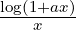 = a
∀a ∈ ℝ.limx→0 = a
= a
∀a ∈ ℝ.limx→+∞(1 +  )x = ea
)x = ea
e = costante di Eulero.
f : A → B ⊆ ℝ, g : B → ℝ
Se:
limx→x0f(x) = y0
limy→y0g(y) = L
∃δ > 0 : 0 <  < δ
< δ  f(x)≠y0
f(x)≠y0
Allora:
limx→x0g(f(x)) = L
Si dice che f : A ⊆ ℝ → ℝ è continua in x0 ∈ A se:
∀𝜀 > 0.∃δ > 0 : ∀x ∈ Iδ(x0) ∩ A. < 𝜀
< 𝜀
Si dice che f è continua in E ⊆ A se è continua ∀x ∈ E
f : A ⊆ ℝ → ℝ, x0 p.a. di A
f è continua in x0 ⇐⇒ limx→x0f(x) = f(x0)
Una successione numerica è una funzione f definita in dom(f) ⊆ ℕ che ad
ogni n ∈ dom(f) associa un numero reale
an = f(n)
Notazione:
Se: dom(f) = 
allora si scrive:  n≥n0
n≥n0
se: dom(f) = ℕ
allora si scrive:  n∈ℕ
n∈ℕ